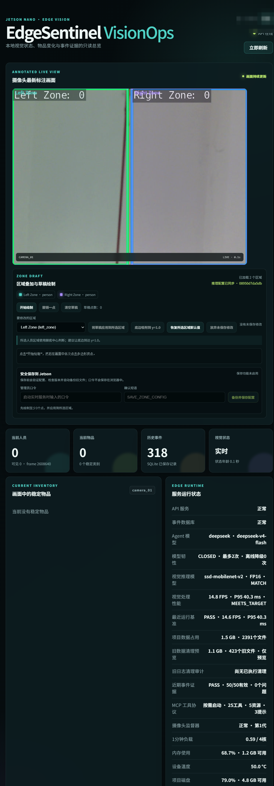
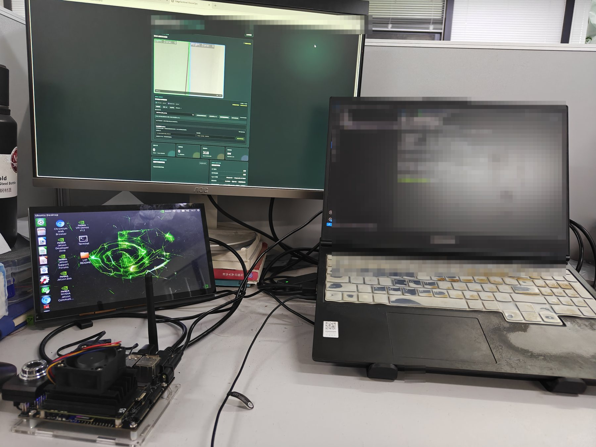
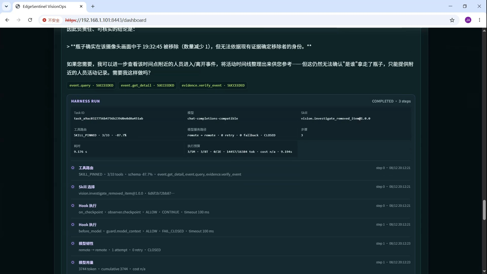
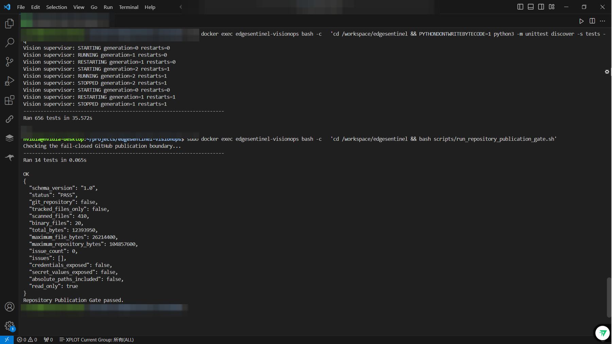

能力层 · Skills / Tools
视觉、事件、证据、设备、天气、内存与恢复工具；版本固定的 Skill 编排复杂调查流程。
JETSON NANO · EDGE AI · AGENT HARNESS
EdgeSentinel 把实时视觉、结构化事件、证据核验、Agent 工具调用、MCP 协议、安全策略与灾难恢复组织成一套可验证的边缘智能体工程。
A trustworthy edge vision Agent Harness—built on a real Jetson Nano, designed to see, reason, act within policy, and recover.
NOT A SLIDEWARE DEMO
项目在 Jetson Nano、USB 摄像头、Docker 与 systemd 环境中持续验收。下面的画面和视频来自实际实验，而不是概念效果图。

打开全尺寸 Dashboard 总览 ↗


FOUR-LAYER HARNESS
模型只是决策环的一部分；确定性路由、策略执行、工具协议、状态记忆、生命周期 Hook 和可观测性共同构成 Harness。
视觉、事件、证据、设备、天气、内存与恢复工具；版本固定的 Skill 编排复杂调查流程。
FastAPI 服务面与本地只读 MCP stdio Server，共享 JSON Schema 与默认拒绝策略。
DeepSeek 在线推理、离线确定性回退、工具路由、执行预算、会话与长期确认记忆。
Docker、systemd、RBAC、TLS、Hooks、脱敏 Trace、熔断降级、加密备份与恢复演练。
FROM PIXELS TO OPERATIONS
目标检测、稳定计数、匿名轨迹、双区域与画面新鲜度。
进入、停留、离开、移除与遗留事件，配套前后帧和 SHA-256 核验。
确定性工具路由、版本化 Skill、生命周期 Hook、预算与协作取消。
默认 DeepSeek 在线；网络异常时明确标注并降级到本地规则。
只读 Tools、Resources、Prompts、JSON Schema 与任意文件访问拒绝。
L0–L3 风险、确认门、RBAC、HTTPS、加密异机备份与隔离恢复演练。
WATCH THE SYSTEM WORK
端到端全景、实时视觉、区域事件、物品生命周期、遗留检测、Agent Harness、在线/离线模式与 MCP Server。视频保留原始文件，可通过 SHA-256 Manifest 核验。
READ · VERIFY · BUILD